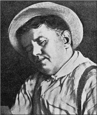

William Sydney Porter là một nhà văn người Mỹ. Ông sử dụng bút danh O. Henry. Ông sinh ngày 11 tháng 9 năm 1862 tại Greensboro, tiểu bang Bắc Carolina. Ông không được học hành nhiều. Ông bỏ học năm 15 tuổi.
Năm 1882, Porter chuyển đến tiểu bang Texas. Ông làm việc tại một trang trại. Sau đó, ông rời trang trại và từ năm 1854 đến năm 1886, ông làm nhân viên kế toán tại một văn phòng ở Austin. Ông phụ trách sổ sách của công ty.
William Porter kết hôn với Athol Estes Roach năm 1887. Athol và William có hai người con, một gái và một trai. Ngay sau đó, William bắt đầu viết các bài báo và truyện cho các tạp chí và báo.
Từ năm 1891 đến năm 1894, William làm việc tại Ngân hàng Quốc gia First ở Austin, Texas. Năm 1895, cảnh sát muốn bắt giữ ông. Ông đã lấy tiền từ Ngân hàng Quốc gia First. William trốn tránh cảnh sát và đến Honduras. Ông ở lại Trung Mỹ trong một năm.
Nhưng Athol bị bệnh rất nặng và vào năm 1897, William trở về Mỹ. Athol qua đời cùng năm đó. Sau đó, William bị kết án ba năm tù. Trong tù, ông bắt đầu viết truyện ngắn. Hầu hết các truyện đều buồn cười và có kết thúc bất thường.
William Porter ra khỏi tù năm 1901. Đầu tiên, ông sống ở tiểu bang Ohio. Sau đó, vào năm 1902, ông chuyển đến Thành phố New York. Người vợ thứ hai của William là Sara Lindsay Coleman. Họ kết hôn vào năm 1907. William kiếm được nhiều tiền, nhưng ông đã tiêu sạch. Ông uống quá nhiều rượu. William Porter qua đời tại một bệnh viện ở New York vào ngày 4 tháng 6 năm 1910. Trong túi ông chỉ còn 23 xu. Ông hưởng thọ 48 tuổi.
Một số cuốn sách của William Porter là: Cabbages and Kings (Bắp cải và các vị vua, 1904), The Four Million (Bốn triệu người, 1906), The Gentle Grafter (Người ghép cành tài ba, 1908) và Options (Tùy chọn, 1909).